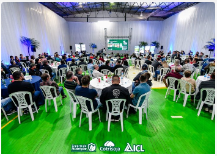

EVENTOS
Início
Soja
Notícias
Eventos
Empresas Parceiras

Clique aqui para acessar mais informações sobre o evento da Cotrisoja
Clique aqui para acessar mais informações sobre o evento promovido pela Embrapa
Clique aqui para acessar mais informações sobre o Congresso Brasileiro de soja